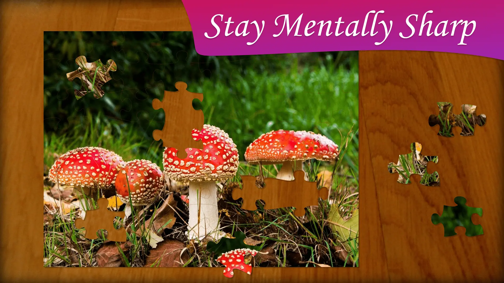
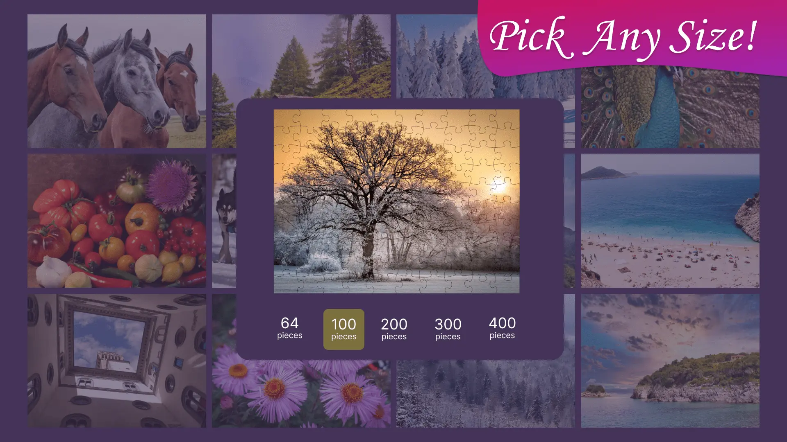
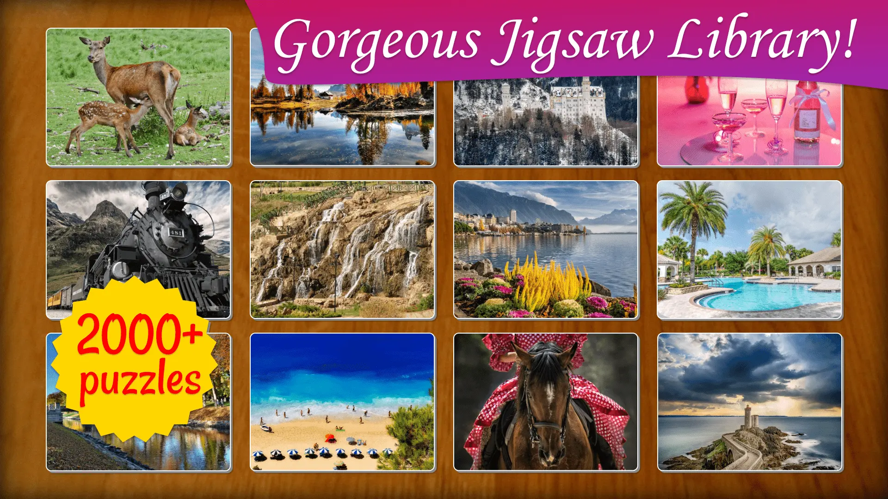
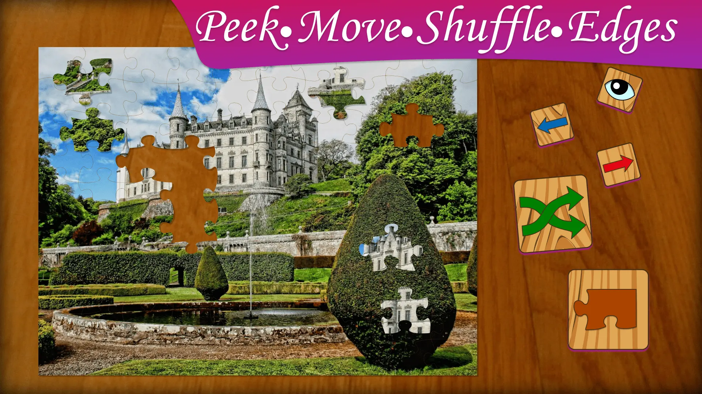
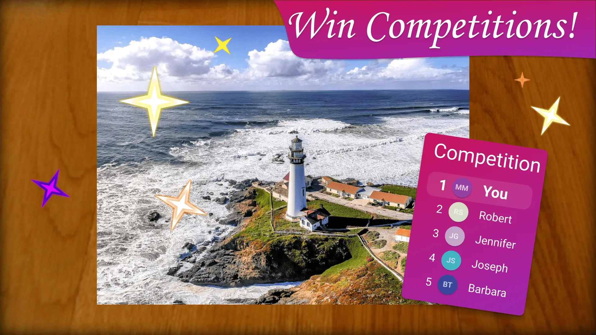
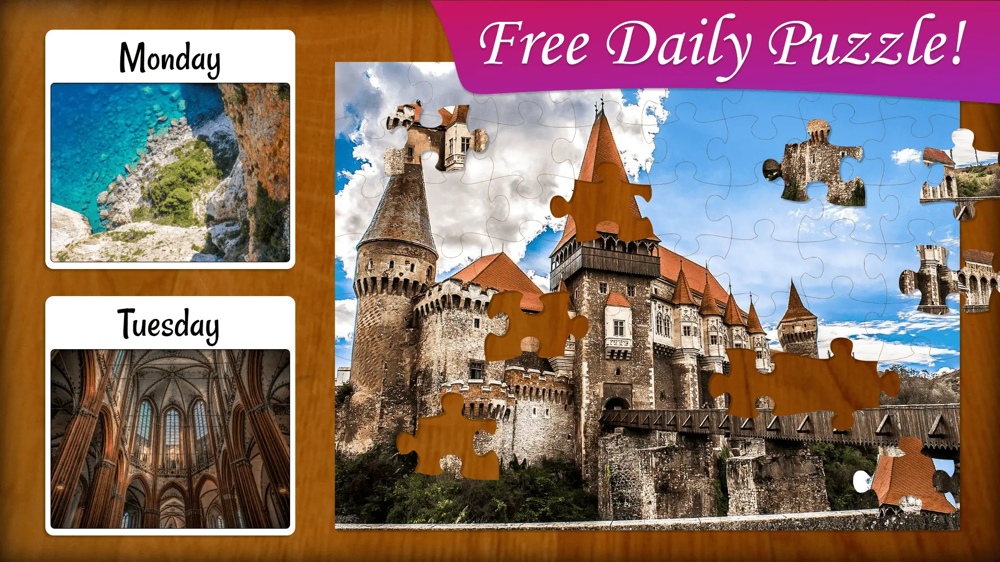

Jigsaw Puzzle Frenzy is a delightful and challenging game that invites you to explore the world through stunning puzzles. With a diverse collection of images featuring landmarks, architecture, landscapes, plants, and animals, there's something for everyone to enjoy. Choose from different difficulty modes to match your skill level, whether you're looking to relax or sharpen your mind. Each puzzle not only tests your abilities but also provides a sense of accomplishment as you complete each masterpiece. Join a community of fellow puzzle enthusiasts and keep discovering new puzzles with regular updates. Dive into the world of Jigsaw Puzzle Frenzy today and start piecing together memories and moments from around the globe!
Free to download — Basic with Ads, or upgrade to Premium

Jigsaw Puzzle Frenzy can be played in several difficulty modes. Before starting a puzzle, pick the number of pieces. Jigsaw Puzzle Frenzy contains puzzles with: 64, 100, 200, 300 and 400 pieces.

Jigsaw Puzzle Frenzy contains over 2000 puzzles containing diverse images. The game contains packs of 25 puzzles each. We add new puzzle packs regularly.

Jigsaw Puzzle Frenzy contains tools that help you solve the puzzles faster. You can peek at the entire image, move all pieces to the sides of the screen, shuffle the pieces or show the edge pieces only.

Every daily puzzle is also a competition. Solve it as fast as you can and see where you rank on the global leaderboard. Top players earn coin prizes — first place wins 15,000 coins. A seasonal leaderboard tracks the most consistent competitors over weeks. It's friendly, fair, and genuinely addictive.

Every day a brand new puzzle is available completely free — no subscription required. Each daily puzzle resets at midnight, is unique to that day, and can be played at any difficulty from 64 to 400 pieces. It takes just a few minutes or as long as you like. It's the reason thousands of players open the game every morning.

Awesome by Susan
★★★★★
Love the puzzles they are so beautiful and they help with stress. Best game ever. A stress free game.
Jigsaw Puzzle Review by Anonymous
★★★★★
I always do this first thing in the morning with my second cup of coffee. It makes my brain work and I love all the different pictures. I do the 100 piece puzzle with the 32 inch monitor because the smaller pieces are harder to see. Old eyes you know.
Great puzzling by Deborah
★★★★★
Especially love the daily puzzle. Great site!
Relaxing and fun by Anonymous
★★★★★
I'm 40 years old and I absolutely love this puzzle app. There is a new free puzzle to complete every day. It is easy to use, fun and relaxing.
One of the best jigsaw puzzle games in the Microsoft Store by Anonymous
★★★★★
Really relaxing and very nicely designed jigsaw puzzle game. Challenging puzzles and verify configurable. The best in the Microsoft Store in my opinion.
Free to download — Basic with Ads, or upgrade to Premium
Love our jigsaw puzzles and the beautiful imagery they depict? Check out more games and downloads on our other website frenzygames.net. Dive into a world of stunning puzzles and endless fun!